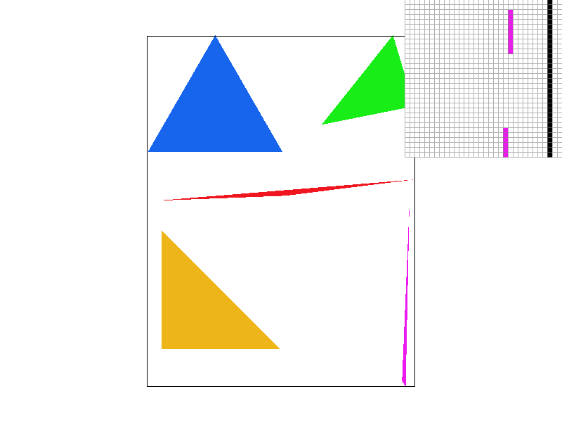
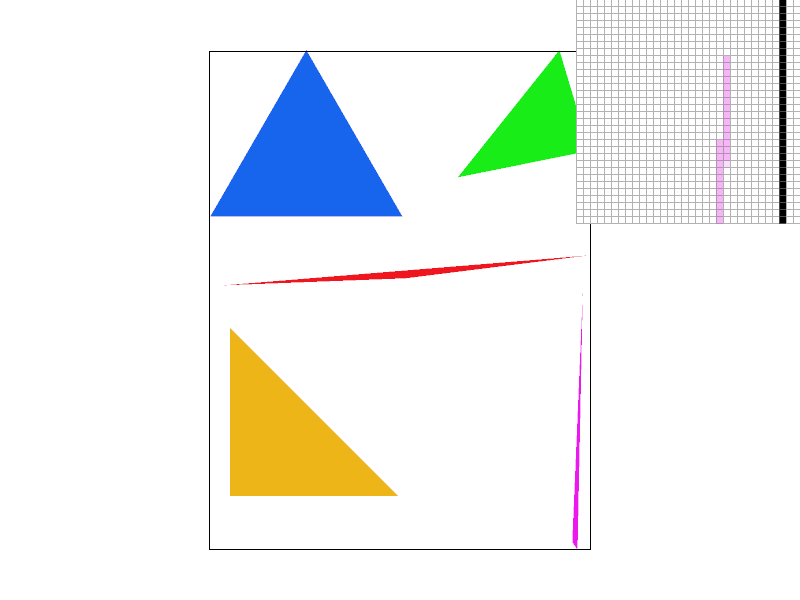
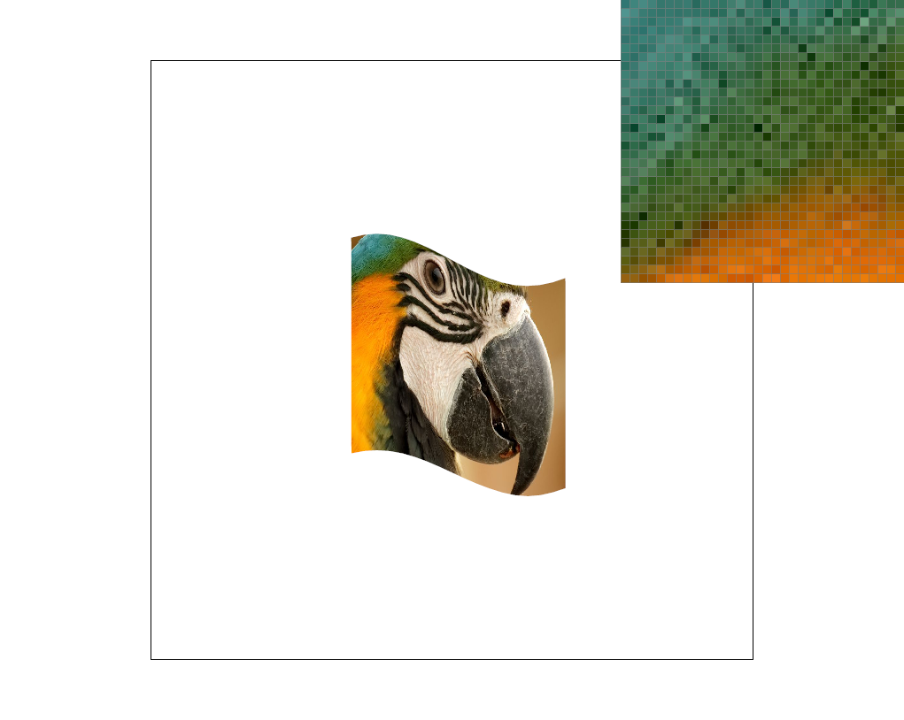
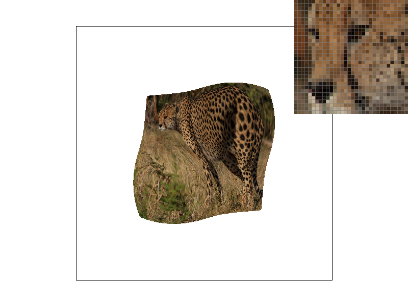

Overview
This project implements a rasterizer with basic antialiasing and texture mapping techniques. The rasterizer can display polygons and can supersample to prevent aliasing. It also interpolates points within polygons to approximate colors and textures. It also has various texture mapping techniques involved to reduce aliasing. This project was really interesting because I got to implement and see the effects of the various methods of antialiasing. It was really fun being able to see improvements in the image quality as I worked through the project.
Section I: Rasterization
Part 1: Rasterizing single-color triangles
I used the bounding box method and the three line test to rasterize the triangles. To find the bounding box, I find the top left and bottom right corners of the box to use these points as bounds on the points to sample. The left and top bounds are floored, and the right and bottom bounds are rounded up to include all points in the triangle. For each point in the bounding box, I check if the point is inside the triangle using the three line test. The line test is the counter-clockwise test given in Lecture 2. If the points are clockwise, my algorithm will detect it by calculating double the area of the triangle with the following determinant formula: (x1 - x0) * (y2 - y0) - (x2 - x0) * (y1 - y0), and reorder the points so that they're counter-clockwise. If the point is inside the triangle, it gets colored.
My algorithm is no worse than one that checks each sample within the bounding box because it is exactly that algorithm.
Part 2: Antialiasing triangles
My supersampling algorithm samples each pixel at sample_rate subpixel locations. The color is recorded in a supersample frame buffer if the sample is inside the triangle boundaries. The frame buffer has size width*height*sample_rate so that there's enough space to hold the color of every subpixel. You can imagine it being the original frame buffer, but stacked sample_rate times, so that each new stack holds the value for the next subpixel. Once all the elements are done being processed, a final run through over the supersample frame buffer populates the framebuffer target which displays the image. The run through averages the color of all the subpixel for a single pixel, and inputs that average color into the target framebuffer.
Supersampling is useful because it reduces jaggies by approximating edges more accurately. With extra information on where the edge lies, we can have a better guess on the strength of the color for a pixel on the edge. I modified my rasterization triangles method to incorporate super sampling, the set sample_rate and frame buffer dimension methods to rasterize dynamically, the fill pixel method so that draw line and draw point now draw to the supersample buffer first, and finally the method that loads in elements after all elements have been processed.
|

|

|
|
The thin pink triangle is being better approximated with higher sampling rates because if pixels are partly included in the triangle, they will be represented by lighter shades of pink instead of nothing at all. With more subpixels, the algorithm can decide roughly how much a certain pixel is contained in the triangle, and can shade accordingly.
Part 3: Transforms
I changed cubeman's arms so that it looks like he's waving. I changed his left arm so that it looked like his left leg and translated it to the right spot next to his torso. I then changed his right lower arm to look like half of one of his legs and translated it to the right spot.Section II: Sampling
Part 4: Barycentric coordinates
Barycentric coordinates are the weights the vertices of a triangle have on a point inside the triangle. The closer the point inside is to one vertex, the stronger influence that vertex has on the point's value. So a point that has all equal barycentric values is the center of mass of the triangle. The barycentric coordinates can be found by taking the proportional distances of the inner point from a vertex and the side opposite from that vertex. Below is an example of a triangle gradient with colors calculated using barycentric coordinates. Notice that the colors near each vertex are similar in color to the actual vertex.Part 5: "Pixel sampling" for texture mapping
Pixel sampling is a way to look up pixel color values given a separate texture map. The pixels in one space are mapped to points in the texture map, and the appropriate color on the texture map is found and loaded as the color of the pixel in the original space. For example, a pixel location has as corresponding location in the texture map space, so when triangle rasterization happens, the texture map locations of points within the triangle can be approximated with barycentric coordinates and the original mapping of vertex location to texture map location. With this method, points within a triangle can be colored appropriately by doing a translation to texture space, and then back to the original space.
The two methods used in this part are nearest sampling and bilinear sampling. Nearest sampling is just choosing the closest texel to the original pixel. The coordinates u and v which denote the ratio of the map the pixel is in is just scaled by the width and height to get the coordinate of the correct texel. Rounding the numbers to the closest integer is how the nearest pixel is chosen.
Bilinear sampling uses 1d linear interpolation to get the color value of the pixel. The four nearest texel colors are used to compute the value of the pixel. It's a weighted average with each weight proportional to the distance the pixel is to each of the four nearest texels. Interpolating values instead of just taking the nearest color results in smoother images.
Below we can compare the two sampling methods. The left images are sampled using nearest sampling, and the right is sampled using the bilinear method. The top images are subsampled with 1 sample per pixel while the bottom images are subsampled with 16 samples per pixel. Comparing the nearest sampling method with the bilinear method, we can see that the gradient of the parrots feathers changes more naturally with bilinear sampling. The pixels are not as dark and blocky as those when using nearest sampling. Overall the parrot's feathers look smoother and the color changes more gradually.
|
|

|
|

|
|
Part 6: "Level sampling" with mipmaps for texture mapping
Level sampling is a process of computing the pixel value by using mipmaps. Mipmaps are copies of the original texture that are sucessively reduced in resolution. Each next mipmap layer is reduced by a factor of 2 and help efficiently produce images that don't have aliasing. For texture mapping in this part, there were three modes of level mapping: level zero, nearest level, and linear leveling. For level zero level mapping, the texture map used is just the first mipmap. This is what was done in part 5 above. For nearest level, the mipmap used is the one that has the closest point to the sample point. The texel is then chosen from that mipmap. For linear level sampling, we choose the two closest mipmaps and interpolate the texel value in each separate mipmap. We then interpolate the resulting two values together to find the final value of the pixel.
There are many tradeoffs in speed, memory, and antialiasing power between the various techniques. For example, lienar level sampling is more expensive in terms of speed than the other two level sampling methods because there are more memory accesses and computation being done to interpolate the final value. However, this technique may be better for antialiasing since more information is being used to generate the final value. Sometimes linear level sampling is too much and can result in blurring. Level zero is the best in terms of speed and memory, but will have less antialiasing power because it doesn't use any of the texel information stored on the lower resolution mipmaps, which can help approximate pixel values better.
|
|

|
|
|

|